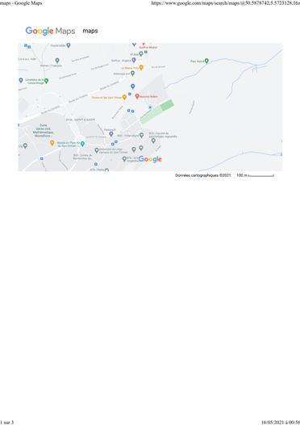
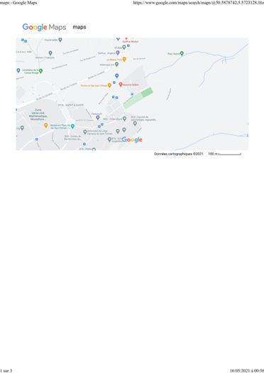

Siège social
Chemin du Trèfle, 4000 Liège
Tel: 04/221 36 87
fax: 04/221 36 87
Email: contact@yacinetechnologie-be.com

Chemin du Trèfle, 4000 Liège
Tel: 04/221 36 87
fax: 04/221 36 87
Email: contact@yacinetechnologie-be.com

Nouveautés :


ZOOM SUR: Informatique
NOTRE SELECTION
NOS PRODUITS
| Informatique | Réseau | Télésurveillance |
|---|---|---|
| |
||
| |
|
|